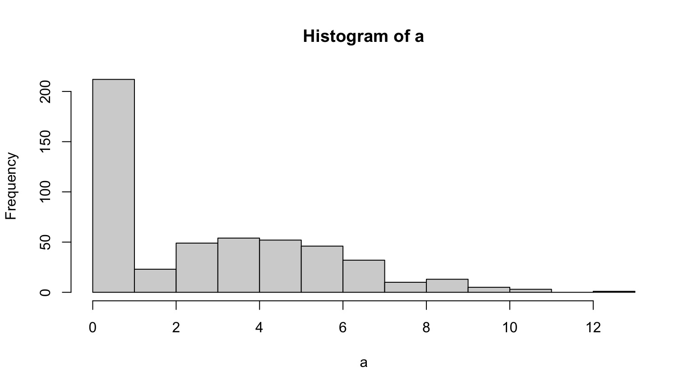

Jarrett Byrnes
UMass Boston
https://biol609.github.io/
Second, Some Old Technology

- Green: Party on, Wayne
- Red: I fell off the understanding wagon
- Yellow: Slow down, Mister Teacher
- Blue: Write a question/Other
Outline for Today
Who are you?
How will this course work?
What are we doing here?
Rethinking everything
Who are You?
Name
Lab
Brief research description
Why are you here?
Outline for Today
Who are you?
How will this course work?
What are we doing here?
Rethinking everything
Lecture and Lab
- 1 Hour Lecutre on Concepts with code
- 1/2 Hour work on problem
- Occasional Paper/Chapter Discussion
Interact via Slack

- Join the #Biol609 channel
The Book: Statistical Rethinking

Monthly Problem Sets
2-3 Problems covering topics from the month
We will go over them in 1/2 hour of the next class, self-graded
Final Paper
Do your research
(but be statsy about it)
Outline for Today
Who are you?
How will this course work?
What are we doing here?
Rethinking everything
Model-A-Palooza
Objective 1) To learn how to think about your study system and research question of interest in a systematic way and match it with a realistic process-based model.
Enter The Reverend
Objective 2) To understand how to build and fit hierarchical/multilevel models in a likelihood and Bayesian framework.
The Rest of Your Life
Objective 3) Provide the grounding needed to effectively collaborate with statistical experts.
Objective 4) Allow students to gain the knowledge necessary to become life-long learners of data analysis techniques, able to incorporate new techniques into their analytic toolbelt as needed.
Modeling So Far: General Linear Models
\[\boldsymbol{Y} = \boldsymbol{b X} + \boldsymbol{\epsilon}\]

Foundational Modeling Approach
What is your data generating process?
What is your error generating process?
Philosophical Approach
- Frequentist Inference: Correct conclusion drawn from repeated experiments
- Uses p-values and CIs as inferential engine
- Information Theoretic Inference: Evaluate the weight of evidence for different hypotheses
- Derivative of frequentist mode of thinking
- Uses model comparison (sometimes with p-values…)
- Bayesian Inference: Probability of belief that is constantly updated
- Uses explicit statements of probability and degree of belief for inferences
The Foci of the Course
More realistic/complex Generative Models
Thinking with Care about Error Structures
Bayesian Inference and the Freedom it Brings for Process-Based Models
Causal Inference
New Process-Based Models: Zero Inflated Models

Mixed Models

Mixed Models

Heterogeneous Error Structure

Spatial Autocorrelation

Temporal Autocorrelation

Deep Dives into Bayes

Causal Modeling with Graph Theory

Outline for Today
Who are you?
How will this course work?
What are we doing here?
Rethinking everything
How do You View Data Analysis?

NO!
One Hypothesis ≠ One Statistical Model

Apply this to your research!
Back to Bayes-ics

Bayesian Inference

Estimate probability of a parameter
State degree of believe in specific parameter values
Evaluate probability of hypothesis given the data
Incorporate prior knowledge
- Frequentist: p(x ≤ D | H)
- Likelhoodist: p( D | H)
- Bayesian: p(H | D)
Why is this approach inherently Bayesian?

Let’s see how Bayes works
I have a bag with 6 stones. Some are black. Some are white.
I’m going to draw stones, one at a time, with replacement, and let’s see the number of ways that the draw could have been produced.
After 4 draws, let’s calculate the probability of W white stones and B black stones. Let’s formalize how we made this calculation. This leads to conditional versus marginal probabilities.
Let’s see how Bayes works…
Now, I will look at the stones, and introduce a prior or some sort for W.
Let’s do a new set of draws, but this time, on the board, update our posterior.
And finally, relate this to the definition of Bayes theorem in 2.3.4 pg 36.
Let’s do this in R with Grid Sampling!
Use dplyr and mutate for the following.
- Chose what fraction of stones is white in a bag of infinite size.
- Creat a column of possible values from 0 to 1.
- Define a prior as the second column.
- Calculate your posterior after 1 random draw, then repeat for draws 2-4 plotting your posteriors
- posterior = likelihood*prior/sum(all posterior values)
- Plot your posterior given 100 draws, given your initial prior.
Introducing rethinking
This is from the Rcode on page 42, box 2.6. Assume 100 draws.
Now let’s explore our output